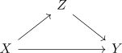

CW approximation of a cofibration
Proposition
Let $f: X \rightarrow Y$ be a hurewicz cofibration. Then there exists a relative cw inclusion $(X,Z)$ and a weak homotopy equivalence $Z \rightarrow Y$

Here $X$ is seen as CW complex with $\mathrm{Sk}_{-1}(X) = X$ and $\mathrm{Sk}_{-1}(Z) = X$
Proof
Let $X